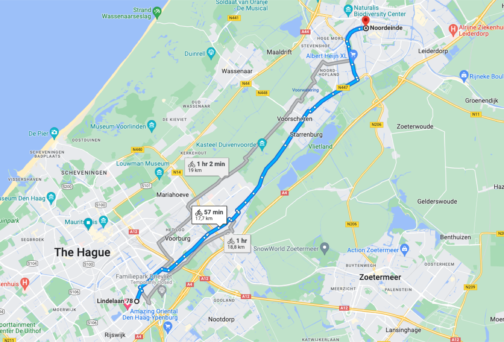
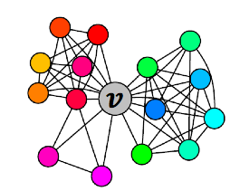
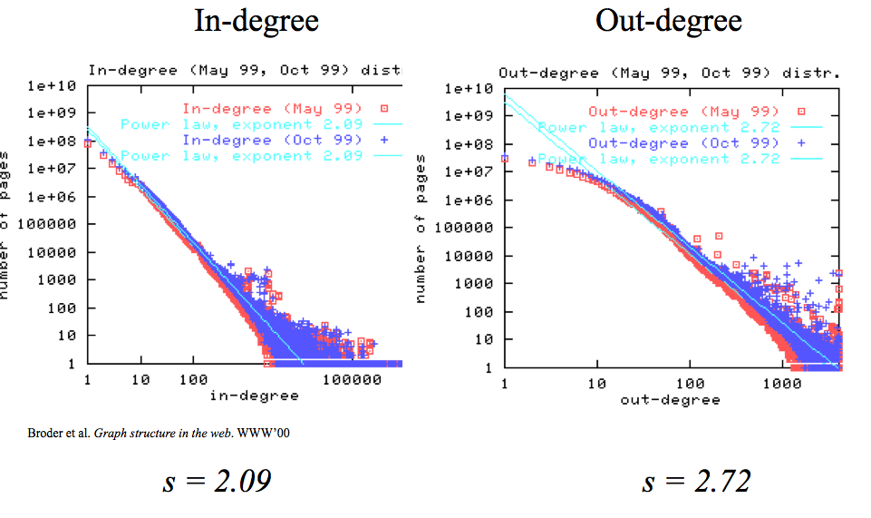
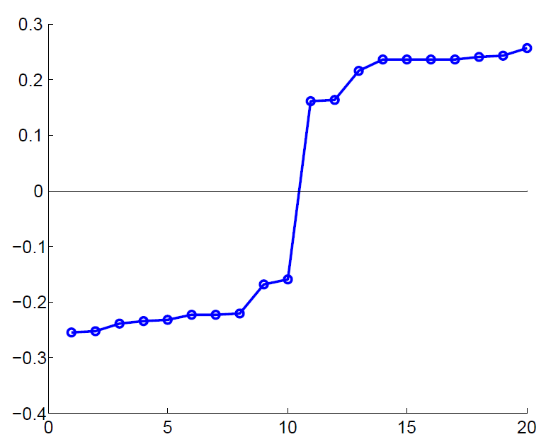
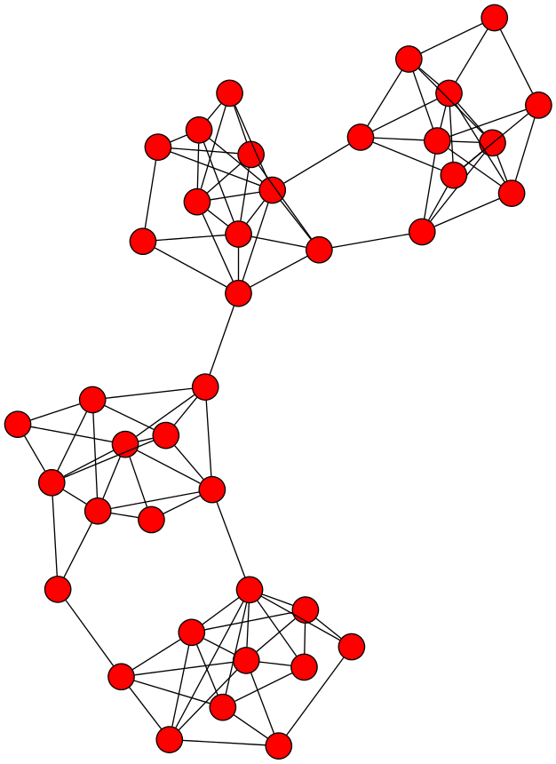
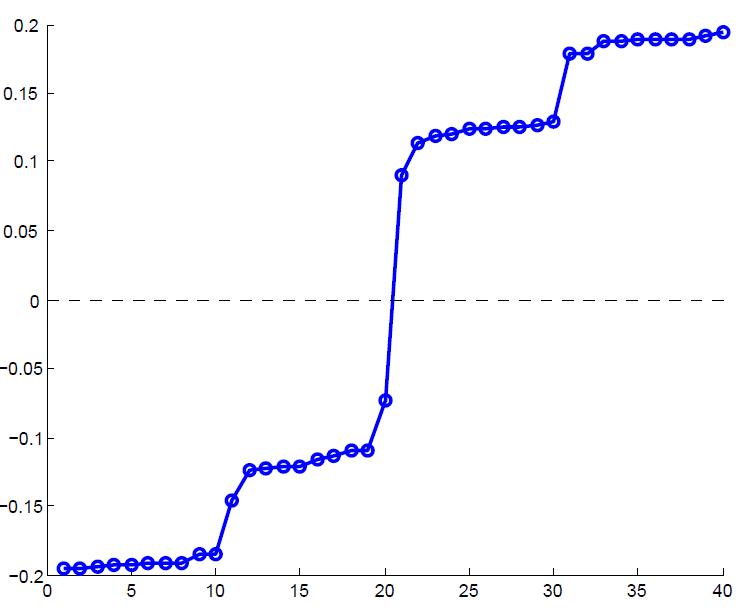
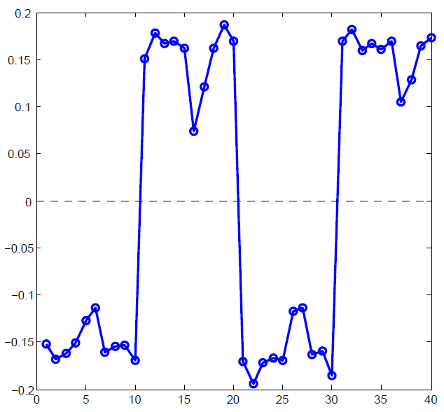
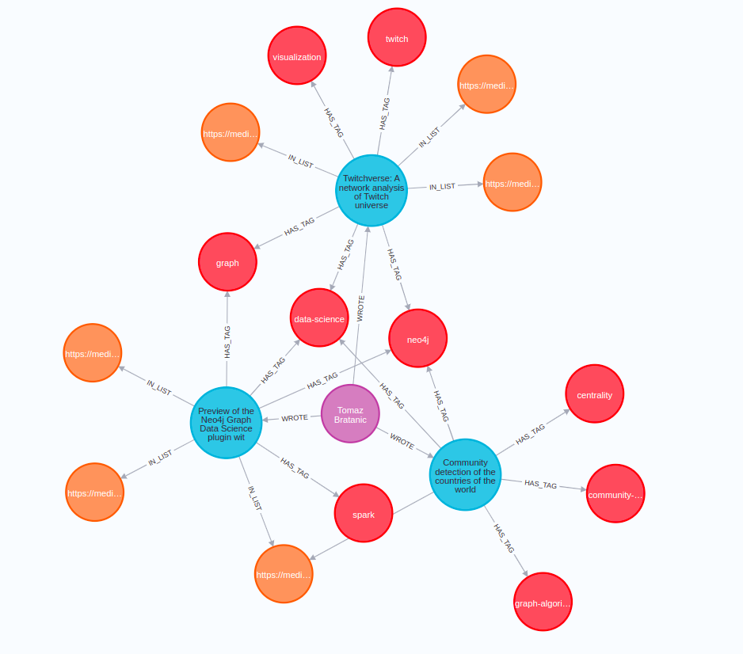
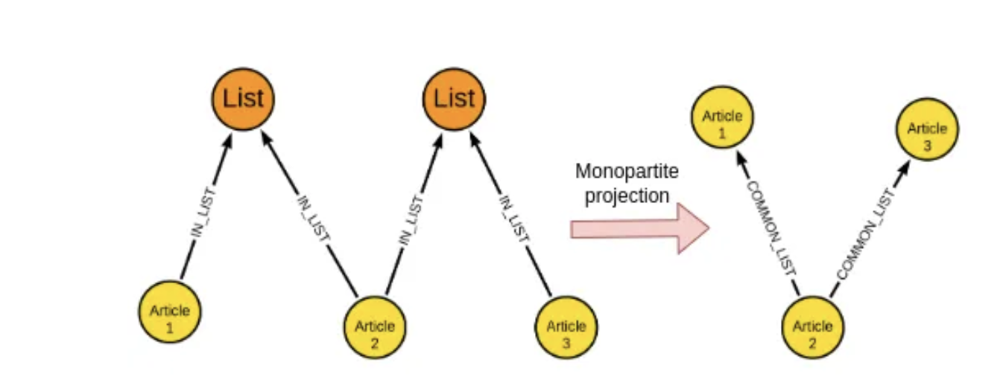

Representing graphs as matrices, measuring structure, finding central nodes and communities — with spectral clustering, Girvan–Newman, and node embeddings.
A. Anand · lecture 13 study deck
Part I
Graphs are everywhere — and massive
What a graph is, what questions it answers, and how we store one on a computer.
Many real-world datasets are graphs
Why graphs?
People & web
Social networks
Web graphs (pages & links)
Citation networks
Science
Protein–protein interactions
Molecules
XML / parse trees
Infrastructure
Road networks
Internet routing
Product / co-purchase graphs
These graphs are massive — we need automatic methods to understand them, not eyeballing.
What's possible with graphs · routing
Finding shortest paths

A route is a shortest path on a weighted road graph. The same primitive powers
internet routing and "degrees of separation" in social networks.
What's possible with graphs
Important nodes & communities
Finding important nodes — social-media influencers & early adopters, authoritative web pages, key proteins. PageRank is the classic algorithm.
Discovering communities — groups of developers / customers, clusters of related papers in a citation network.
Both reduce to structure: who is connected to whom, and how densely.

The vocabulary
What is a graph?
Graph G = (V, E)
A set of vertices V with |V| = n and a set of edges E with
|E| = m. Edges may be directed or undirected, and optionally weighted.
Degree d(v) — number of edges at v. In a directed graph: in-degree and out-degree.
Undirected: ∑v d(v) = 2m — every edge is counted at both ends.
Directed: the sum of all out-degrees equals m (each edge leaves exactly one node).
How to store a graph
Three ways to store a graph
Adjacency matrix
n × n, entry aij=1 if edge i–j
O(n²) space — dense, even if few edges
Edge lookup in O(1); enables linear algebra
Adjacency list
Per node, a list of neighbours
O(n + m) space — great for sparse graphs
Neighbour iteration is fast
Edge list
Just the set of (u, v) pairs
O(m) space — simplest
Slow for "are i, j adjacent?"
Real graphs are sparse (m ≪ n²), so lists save memory — but the matrix view unlocks spectral methods.
Part II
Graph properties
Distances, small-world and scale-free structure — the characteristics real networks share.
The data-miner's warning
Why study graph properties?
Key idea
Many real-world graphs share the same structural characteristics. Explaining why they appear is a core area of network research.
As data miners we must know the consequences: a "finding" that is fully explained by a generic property (e.g. a few huge-degree hubs) is not interesting — it is what any such graph would show.
Distances in a graph
Eccentricity, radius & diameter
Distance d(u,v) — the (weighted) length of the shortest path between u and v.
Eccentricity e(v) — the maximum distance from v to any other vertex.
Radius r(G) — the minimum eccentricity over all vertices.
Diameter d(G) — the maximum eccentricity over all vertices.
Effective diameter — the smallest value larger than the eccentricity of a large fraction of vertices (robust to a few outliers).
A property of real networks
The small-world property
Small-world
A graph is small-world if its average path length grows only logarithmically with the number of nodes — avg path ∝ log n. Any two nodes are reachable in surprisingly few hops.
"Six degrees of separation" / the Kevin Bacon game; the Erdős number — how far a mathematician is from Paul Erdős.
A large co-authorship network of 268K authors has radius 12 and diameter 23 — tiny for its size.
The World Wide Web · Broder et al., WWW'00
Scale-free: power-law degrees

Web in-degree follows a power law with exponent γ ≈ 2.09, out-degree γ ≈ 2.72 —
straight lines on a log–log plot. Most nodes have tiny degree; a few are huge hubs.
The degree distribution
The scale-free property
Degree distribution
f(k) = number of vertices with degree k. A graph is scale-free if
f(k) ∝ k−γ — a power-law distribution.
f(ck) = α(ck)−γ = (α c−γ) k−γ ∝ k−γ
"Scale-free" = rescaling the degree axis by c just rescales the curve — the shape is unchanged.
The majority of vertices have small degree; a few hubs have very high degree.
Question
In a network of millions, which few nodes act as bridges between communities — the ones whose removal would split the graph apart?
Not necessarily the most-connected nodes.
Think — then → for the answer.
Part III
Centrality — which nodes matter
Degree, eccentricity, closeness and betweenness — and Girvan–Newman for communities.
Ranking vertices by importance
What is centrality?
Definition
A centrality is a function c : V → ℝ that induces a total order on vertices.
The higher c(v), the more important / central the vertex. The more central a node, the faster it reaches the rest of the graph.
Degree & eccentricity centrality
Closeness centrality
Betweenness centrality
The two simplest measures
Degree & eccentricity centrality
Degree centralityc(vi) = d(vi) — simply the degree of the vertex. More neighbours = more central.
Eccentricity centralityc(vi) = 1 / e(vi) — the least eccentric vertex is the most central; the most eccentric is peripheral.
Minimise the average distance
Closeness centrality
Closeness
The vertex with the least total distance to all others is the centre:
c(x) = 1∑y≠x∈V d(y, x)
Eccentricity centrality minimises the maximum distance.
Closeness centrality minimises the average distance — this is the measure used to find the "centre of Hollywood".
Lying on many shortest paths
Betweenness centrality
Betweenness
b(x) = ∑s≠x≠tσst(x)σst
σst = number of shortest paths s→t; σst(x) = how many of them pass through x.
Measures how many shortest paths route through a node.
Also defined for edges (edge betweenness); high-betweenness edges are weak ties bridging communities.
Computing betweenness efficiently
The Girvan–Newman algorithm
Stage 1
Pre-processing & BFS
Root the graph at a node; run BFS top-down. Level = shortest-path length from root; each node's label = sum of its parents' labels (number of shortest paths from root).
Stage 2
Credit assignment
Work bottom-up, assigning credit to nodes and edges based on the BFS labels.
Stage 3
Aggregation
Repeat for every root node, then sum credits to get final betweenness.
Girvan–Newman · the bottom-up rules
Credit assignment
Each leaf gets credit 1.
Each non-leaf node gets 1 + the credit flowing up from its children.
A node with more than one parent splits its credit in proportion to the parents' BFS labels (the shares of shortest paths).
Edge credit = the credit that flows from parent to child along that edge.
In aggregation, divide every edge credit by 2 — each shortest path was counted from both endpoints.
Example: a node reached via B (label 3) and G (label 1) sends ¾ of its credit up to B and ¼ to G.
From betweenness to communities
Clustering by removing weak ties
Girvan–Newman community detection
Edges between communities carry the most shortest paths — highest edge betweenness. So we cut them:
Repeat until a suitable number of communities remains:
— Compute the betweenness of every edge.
— Remove the edge with the largest betweenness.
The graph splits into connected components = communities. Divisive & hierarchical, but expensive (recompute after each cut).
Part IV
Spectral clustering
Represent the graph as a matrix, then use its eigenvectors to find communities.
What makes a good partition?
Graph partitioning
A good partition
Split V into groups that maximise within-group connections and minimise between-group connections.
Connected components are the easy case — no edges between them at all.
Real communities are almost separate: dense inside, a few bridging edges outside.
Spectral clustering uses properties of the graph matrix to find these cuts.
Matrix representations · a 6-node example
Adjacency matrix A
1
2
3
4
5
6
1
0
1
1
0
1
0
2
1
0
1
0
0
0
3
1
1
0
1
0
0
4
0
0
1
0
1
1
5
1
0
0
1
0
1
6
0
0
0
1
1
0
n × n, aij = 1 if there is an edge between i and j.
Symmetric for undirected graphs → its eigenvectors are real and orthogonal.
From A to the Laplacian
Degree matrix D and Laplacian L = D − A
Degree matrix D (diagonal, dii = deg i)
3
0
0
0
0
0
0
2
0
0
0
0
0
0
3
0
0
0
0
0
0
3
0
0
0
0
0
0
3
0
0
0
0
0
0
2
Laplacian L = D − A (symmetric)
3
-1
-1
0
-1
0
-1
2
-1
0
0
0
-1
-1
3
-1
0
0
0
0
-1
3
-1
-1
-1
0
0
-1
3
-1
0
0
0
-1
-1
2
Every row of L sums to 0 → the all-ones vector is an eigenvector with eigenvalue λ₁ = 0.
Why the matrix view helps
What does A·x mean?
Neighbour averaging
If x assigns a label xj to each node j, then y = A·x gives
yi = ∑j∈N(i) xj — each entry is the sum of its neighbours' labels.
Eigenvectors
An eigenvector x with A·x = λx is a labelling that is reproduced (up to scale λ) by neighbour-summing.
For a d-regular graph the all-ones vector is an eigenvector with eigenvalue λ = d. These special labellings encode global structure — the basis of spectral clustering.
The second eigenvector of L
λ₂ and the Fiedler vector
Key fact
The smallest Laplacian eigenvalue is λ₁ = 0. The second eigenvalue λ₂ (algebraic connectivity) and its eigenvector x₂ — the Fiedler vector — reveal the best split.
λ₂ solves a relaxed minimum-cut optimisation.
Sorting nodes by their value in x₂ puts the two communities on opposite signs.

The sorted x₂ values show a sharp jump near zero — a clean two-way split.
The algorithm in three stages
Spectral clustering
1 · Pre-processing
Build the matrix
Construct a matrix representation of the graph — the (unnormalised) Laplacian L = D − A.
2 · Decomposition
Eigen-decompose
Compute eigenvalues/eigenvectors of L. Map each node to a low-dimensional representation using one or more eigenvectors (start with x₂).
3 · Grouping
Assign clusters
Split the nodes in the new representation into two (or more) clusters.
Stage 3 · where to split
Choosing the splitting point
Sort the components of the reduced 1-D vector (x₂); identify clusters by splitting the sorted vector in two.
Naïve: split at 0 or at the median — cluster A = positive values, cluster B = negative.
More expensive: sweep over the node ordering induced by x₂ and pick the split that minimises the normalized cut.
The eigenvector gives the order; the sweep picks the single best cut point along it.
Spectral partitioning in action
Example: two communities

Left: dense clusters joined by sparse bridges. Right: the sorted Fiedler vector x₂ —
the single jump at the middle is exactly where the two communities separate.
More than two communities
Reading several clusters from the spectrum


The sorted x₂ (left) shows several plateaus — candidate groups. Using more eigenvectors
(x₃, right) exposes additional block structure for finer partitions.
Partitioning into k clusters
k-way spectral clustering
Recursive bi-partitioning
Hagen et al., 1992
Apply the 2-way split recursively, hierarchically
Disadvantage: inefficient and unstable
Multiple eigenvectors
Shi–Malik, 2000
Build a reduced space from the first k eigenvectors, then cluster (e.g. k-means)
The preferred modern approach
Using several eigenvectors at once gives a stable k-dimensional embedding of each node.
Eigenvectors as node embeddings
From eigenvectors to embeddings
Spectral embedding
Stacking a node's values across the top eigenvectors gives a low-dimensional vector per node — a graph embedding where connected / similar nodes land close together.
Transductive vs inductive
Transductive: the embedding is computed for the fixed graph you have — a new node means recomputing the eigenvectors.
Inductive: learn a function that embeds any node, so unseen nodes get vectors without redoing the decomposition.
Part V
Node embeddings & the lab
Random walks, Node2Vec / DeepWalk, and the Medium-articles assignment.
Lab assignment · Medium articles
A real-world graph: Medium articles

Articles connect to tags, reading lists and authors. Task: a 3-way classification
of articles into software-dev, AI and UX from the graph structure.
Building a node graph from relations
Monopartite projection

The raw graph is bipartite (articles ↔ lists). Project it to an article–article graph:
two articles sharing a list get a COMMON_LIST edge — now spectral / walk methods apply.
The assignment pipeline
Dataset → embedding → classifier
1
Graph construction
Build the Medium article graph from subscription / tag / list relations.
2
Random walks & embedding
Generate node embeddings — spectral (Laplacian) or random-walk based.
3
Classification
Feed embeddings to a classifier for the 3-way topic prediction.
Two embedding routes to compare: spectral (eigenvectors of L) vs random walks.
Two ways to embed nodes
Spectral embeddings vs random walks
Spectral embeddings
Build the (unnormalised) Laplacian L
Compute its eigenvalues & eigenvectors
Use the top eigenvectors as node vectors
Random walks
Start at a node, randomly traverse edges
Fixed-length walks from every node
Walks → "sentences" → embeddings
Random walks power the popular node-embedding methods DeepWalk and Node2Vec:
treat each walk as a sentence of node-IDs and learn vectors with a word2vec-style model.
Lecture 13 · wrap-up
Summary
Take away
Graphs are everywhere and large — stored as adjacency matrix / list / edge list. Real networks are small-world (log paths) and scale-free (power-law degrees).
Spectral clustering uses the Laplacian's eigenvectors (the Fiedler vector x₂) to partition a graph, and generalises to node embeddings — spectral or random-walk based (DeepWalk, Node2Vec).